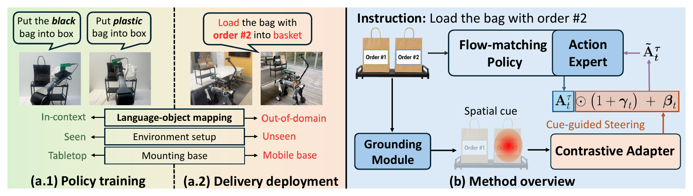

We make a frozen flow-matching VLA (π0.5) follow open-world delivery orders. A VLM turns the instruction into a spatial cue on the target object, and a tiny cue-conditioned adapter (~0.02% params) applies an affine steer to the action chunk — no policy fine-tuning, and up to ~2× higher average success, including on unseen objects and novel instructions.
Training objects, but the instruction is reworded. The robot must still pick the right bag.
Objects never seen during training, referred to with familiar phrasing.
Unseen objects and novel language–object mappings — e.g. two identical bags told apart only by their order number.
Because steering acts on every action chunk during flow integration, the robot re-targets on the fly when the ordered bag is moved mid-grasp, inheriting the reactivity of the underlying flow-matching VLA.
Same instruction — “load the bag with order #2” — same scene, four controllers.
Keep the VLA frozen. Ground the instruction once. Steer the action chunk.
Open-world delivery requires mobile manipulators to follow free-form user instructions and manipulate potentially novel objects. Existing dual-system approaches use high-level grounding models to convert language into grounded visual prompts, but their low-level controllers can remain brittle under noisy perception, dynamic scenes, and contact-rich interactions.
We instead use a pretrained flow-matching vision-language-action model as the low-level control interface, leveraging its reactivity and robustness to environmental changes while treating the grounding output as a spatial cue for policy steering. Our key insight is that the pretrained VLA already provides a strong manipulation prior, while the spatial cue supplies the missing target information needed to guide actions under novel language–object mappings.
Concretely, we introduce a lightweight cue-conditioned adapter. The adapter is first trained with contrastive objectives to produce salient and spatially discriminative cue representations, and is then supervised to predict a diagonal affine transformation over the generated action chunk, aligning policy steering with the cued target. Across tabletop and mobile-base settings, our method improves instruction following and manipulation success on both in-domain and out-of-domain objects, achieving up to near 2× improvement in average task success rate with negligible inference overhead.

A zero-shot grounding module (Qwen3-VL + SAM2.1) converts free-form instructions like “load the bag with order #2” into a Gaussian heatmap at the target object — a sparse cue that is far easier to produce reliably than dense trajectory-level guidance.
Spatial-shift negatives force the cue representation to encode where the target is rather than what the scene looks like, and a residual encoding against a zero heatmap isolates cue-induced features — blocking scene-specific shortcuts.
The adapter predicts a diagonal scale-and-shift (γ, β) over the frozen policy's action chunk during flow integration — adding only ~0.02% parameters, with the full pipeline running at 15 Hz on a single RTX 5080.
Three settings of increasing difficulty, on a tabletop arm and on the mobile base.
| Method | Tabletop | Mobile Base | ||||||
|---|---|---|---|---|---|---|---|---|
| I | II | III | Avg. | I | II | III | Avg. | |
| Base (π0.5) | 70.8 | 45.8 | 0.0 | 38.9 | 33.3 | 50.0 | 8.3 | 30.5 |
| Base-L | 37.5 | 8.3 | 29.2 | 25.0 | 8.3 | 0.0 | 8.3 | 5.5 |
| MOKA | 20.8 | 25.0 | 8.3 | 18.0 | 16.7 | 8.3 | 0.0 | 8.3 |
| VP-VLA | 58.3 | 45.8 | 4.2 | 36.1 | 58.3 | 66.7 | 8.3 | 44.4 |
| Ours | 83.3 | 66.7 | 66.7 | 72.2 | 83.3 | 66.7 | 41.7 | 63.9 |
A three-minute walkthrough of the problem, method, and real-world results.
@inproceedings{wang2026cuetheflow,
title = {Cue the Flow: Steering Flow-Matching Policies for Open-World Delivery Manipulation},
author = {Wang, Haoxuan and Galimi, Griffin and Huang, Junhua and Song, Selina and Wu, Wayne and Yan, Yan and Zhou, Bolei},
booktitle = {Conference on Robot Learning (CoRL)},
year = {2026}
}